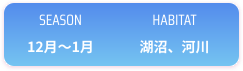
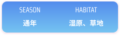
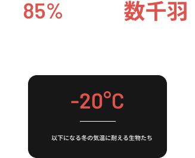

静寂の世界
冬の湿原
気温
-10-0°C
厳しい寒さ
ベストシーズン
12~1月
雪と氷の世界
出会える生き物
20種以上
越冬する命たち

冬、試練と生命力の季節
Winter - Season of Endurance
雪と氷に包まれた白銀の世界。
厳しい環境でも命は静かに息づく。
秋の湿原を代表する命たち
極寒を生き抜く、強い生命力。

Cygnus cygnus
オオハクチョウ
動物
シベリアから飛来する優雅な白鳥。冬の湿原の象徴。
冬の生活
家族単位で行動し、美しい鳴き声でコミュニケーションを
取る。湖沼の水草や水田の落ち穂を食べ、氷点下の寒さの
中でも優雅に泳ぐ。朝は採餌場所へ飛び、夕方は安全な湖
沼に戻る規則正しい生活を送る。白い羽が雪景色に映える
姿は、冬の湿原の代名詞。



Grus japonensis
タンチョウ
植物
雪原で繰り広げられる優雅な求愛ダンス。
冬の湿原を代表する鳥。
冬の生活
冬は給餌場に集まり、数百羽の群れを作る。雪原で繰り
広げられる求愛ダンスは圧巻で、白と黒のコントラスト
が雪景色に映える。早朝と夕方には、一斉に飛び立つ姿
が見られる。つがいの絆を深める重要な時期でもある。


冬の命の拠り所が消えている
冬には、厳しい寒さの中で多くの生物が命をつなぐ最後の砦です。
この場所を失えば、彼らは生き延びることができません。


秋の彩りを未来へ
冬の湿原が失われれば、
白鳥の優雅な姿も、
タンチョウの求愛ダンスも、
雪上のリスの足跡も、
すべて失われます。